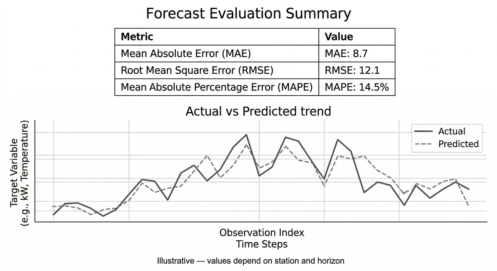

Methodology
A formal description of data, forecasting, and recommendation outputs.
1. Data and study scope
WindCast is a decision-support platform for wind energy screening in Khyber Pakhtunkhwa (KPK), Pakistan. The platform uses monthly time-series data for ten representative stations: Balakot, Bannu, Cherat, Chitral, Dir Upper, Drosh, Kakul, Parachinar, Peshawar, and Saidu Sharif.
The dataset includes a historical period (2014–2023) and a forecast period (2024–2033). The web platform consumes precomputed outputs (JSON) for visualization and reporting; it does not train models in-browser.
/assets/method_dataset.png

2. Pipeline overview
- Preprocessing: quality checks, missing value handling, monthly aggregation, and feature engineering.
- Forecasting: transformer-based sequence model trained on historical monthly patterns.
- Post-processing: smoothing, constraints, unit consistency, and alignment to the 2014–2033 range.
- Recommendation synthesis: mapping forecast signals to turbine type/height/orientation/capacity and hybrid advice.
/assets/method_model.png

3. Outputs shown on the platform
- Wind speed forecast (m/s): monthly time series with range filtering.
- Wind direction forecast (degrees): circular statistics (dominant direction + concentration).
- Wind energy potential (kWh): monthly energy for screening and ranking.
- Smart turbine recommendations: turbine type, height, orientation, capacity, and hybrid guidance.
/assets/method_eval.png

4. Interpretation and limitations
WindCast is intended for preliminary decision support. Forecasts and scenario estimates are not guarantees of generation. Micro-siting, terrain/roughness, wake effects, extreme events, and grid/structural constraints require additional engineering analysis and on-site measurements.